Modding Stardew Valley for fun and (imaginary) profit
Stardew Valley is an immensely popular slice-of-life game released in 2016 by ConcernedApe which teaches players the value of living in ecological balance with the environment, being connected to your local community, and digging through your neighbour’s trash bins. But what if we are unsatisfied with the default bevy of crops available to us? What if we want to farm species endemic to our region, or that are beneficial to local insects? What if your partner really likes tamarinds but you can’t find a mod pack with tamarind trees that doesn’t include like 50 other plants you don’t even want to deal with and the supplied image textures for breadfruit are awful like has this guy ever even seen breadfruit???1
Fortunately, you too can straightforwardly and safely modify your local game to warp reality to your capricious whims experiment with new ideas and get creative!
This quick guide will:
- Review the basics of installing mods for Stardew Valley
- Review the basics of creating your own mod
- Provide a simple workflow for adding your own flora into the game
- Come back to haunt me when my partner starts making “Yellow-Rumped Warbler Plants” that produce entire birds as “vegetables” for our co-op game
The main community resource for modding can be found here; this guide aims to streamline the process to a very specific and achievable goal in order to show anyone that they can try it too.
Getting set up
The Stardew Modding Application Programming Interface (SMAPI) is a free, community-made and open-source program that makes installing and using mods easy and safe. Instructions for installing SMAPI on your computer can be found here. All you need to do is:
- Download the program
- Decompress or “unzip” the program
- Install the program
- Tell your game launcher (e.g. Steam or GoG) to work with the program
Modifying a game’s code directly is… inadvisable. You can imagine how hard it might be to just crack open the ‘guts’ of a complicated program and start just making edits. Moreover many important game files are compiled, meaning they exist on the computer in a computer-efficient but human-unreadable format. Fortunately community members make meta-mods (AKA framework mods): mods which are designed to automatically handle the minutia of coding and compiling for you and make creating certain types of mods much easier. For example some mods make adding new objects to the game easier, by creating a framework where you can just create some image files (defining the graphics) and basic text files (defining the properties) and boom: the meta-mod comes along, reads your files, and edits and recompiles to game code to include those objects. Thus you don’t really need to program anything, just define things you want to be in the game!
We will install a meta-mod called JSON Assets. Check out the Stardew NexusMods page and make an account. Then navigate to the JSON Assets page. Notice that JSON Assets itself is reliant on three mods:
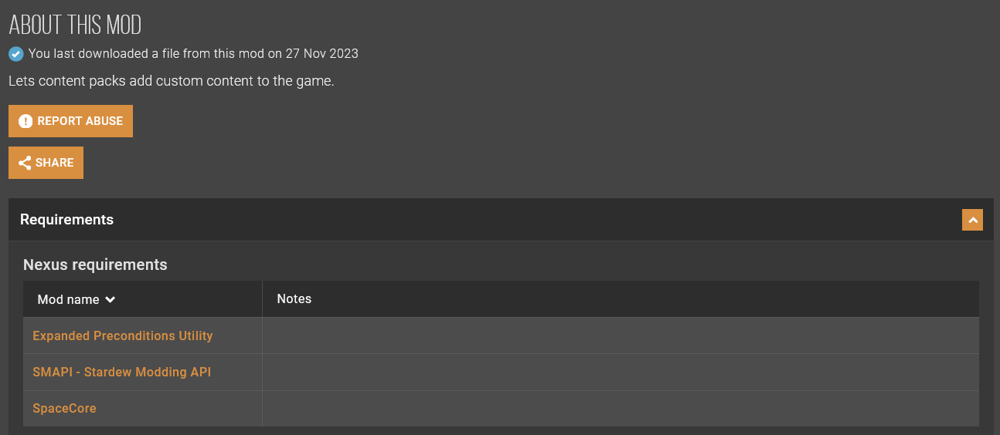
Let’s download and install JSON Assets (manual download):
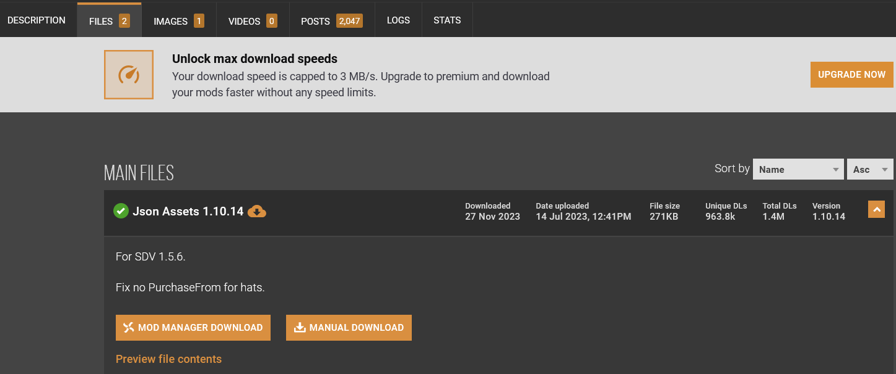
Now, find where Stardew Valley is installed on your machine. If you are using Windows and Steam, it will be located at
C:\Program Files (x86)\Steam\steamapps\common\Stardew Valley
You can verify this by right-clicking Stardew Valley in Steam, selecting Properties > Installed Files > Browse:
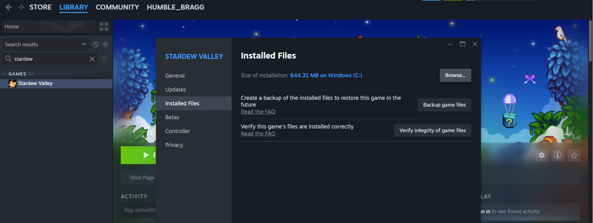
A quick reference for other operating systems and game launchers can be found here.
Move the JSON Assets mod to the /Mods folder and unpack it. It should then look like this:
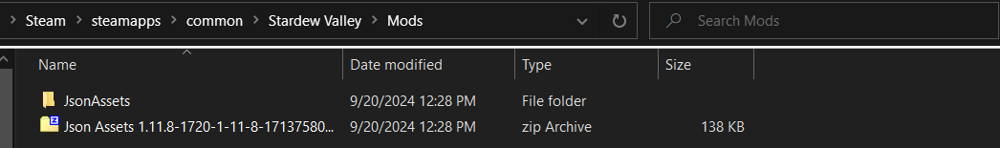
Congratulations: you have installed your first mod! In fact you now know how to install most any mod you might want. Simply download the mod files and unpack them in the Mods folder2. In fact, also install the Expanded Preconditions Utility and SpaceCore mods which are required for JSON Assets to function.
We can test that it works by launching Stardew Valley as normal. This time you will notice that a terminal also opens up and displays output from SMAPI. SMAPI tells us that we are running Stardew Valley version 1.6.8, that it found and successfully loaded our three mods, and gives us a polite warning noting that the mods are ‘intensive’ and directly alter the core game code and save files. This is fine, that’s what we want!
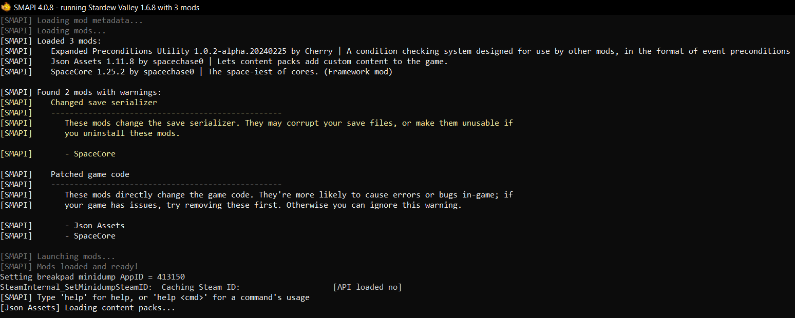
Now we can make our own mod! Let’s add mountain mint (genus Pycnanthemum) as a new cultivar of flower to grow on the farm. Mountain mint is native to Canada and the continental US, produces fragrant leaves, and is an excellent support for native wasps. Now… hey! Trust me: countless species of native wasps are utterly benign to humans. Many species feed primarily on nectar as adults and are parasitoids, laying their eggs inside pest insect species like tomato hornworms to fatal effect. Thus they serve two vital ecosystem and agricultural roles: pollination and pest predation. Wasps are just as important as bees!
We’ll create a new folder in Mods called JakesMod. Inside that folder we’ll add a manfest.json file while holds the basic information of our mod.
{
"Name": "JakesMod",
"Author": "ja-fe",
"Version": "1.0",
"Description": "This mod adds mountain mint as a spring crop to the game.",
"UniqueID": "ja-fe.JakesMod",
"UpdateKeys": [],
"ContentPackFor": {
"UniqueID": "spacechase0.JsonAssets"
},
}The first parts just give the mod an official name and description, while the last part tells SMAPI that it is meant to be run using the JSON Assets framework.
As simple as that, our mod now exists! We want to add a crop to the game. In the JSON Assets framework, all we need to do is create a folder called Crops. Inside we’ll create a folder called Mountain Mint. That folder will contain three files. crop.json will be a text file which defines all the properties of the plant: how much its seeds cost, what season it can be grown in, etc. seeds.png will be a 16x16 pixel image file which defines the graphics for the seed packet. crop.png will be a 128x32 pixel image which defines the graphics for the plant in its different growth stages.
We also need to add a flower object to the game that this crop will produce. In the main directory, we’ll create an Objects folder. Inside we’ll create a folder called Mountain Mint (the name of the plant is the same as the object it produces, as opposed to e.g. almond tree and almond). That folder will contain two files. object.json will be a text file which defines all the properties of the flower: how much it sells for, which villagers hate/like/love it, etc. object.png will be a 16x16 pixel image which defines the graphics for the flower.
Thus, the mod folder will look like this:
/jakesmod
manifest.json
/Crops
/Mountain Mint
crop.json
crop.png
seeds.png
/Objects
/Mountain Mint
object.json
object.pngOnce these files are defined, Mountain Mint will simply be added into the game! A simple way to get started is to download the JSON Assets Resource Pack which contains a single example of each type of item that can be added to the game. We can see that we are given a template for a new crop (plus some bonus base graphics to use for the seed pack):

Let’s copy that template to our mod and edit the crop.json file. After filling out the form according to the instructions, we have:
{
"Name": "Mountain Mint",
"Product": "Mountain Mint",
"SeedName": "Mountain Mint Seeds",
"SeedDescription": "A fragrant, beautiful flower beloved by pollinators. Plant in Spring.",
"Type": "Flower",
"CropType": "Normal",
"Seasons": ["spring"],
"Phases": [2, 2, 2, 2],
"RegrowthPhase": -1,
"HarvestWithScythe": false,
"TrellisCrop": false,
"Colors": null,
"Bonus": //This block determines the chance to get multiple crops.
{
"MinimumPerHarvest": 1,
"MaximumPerHarvest": 1,
"MaxIncreasePerFarmLevel": 5,
"ExtraChance": 0.0,
},
"SeedPurchaseRequirements": null,
"SeedPurchaseFrom": "Pierre",
"SeedPurchasePrice": 60,
// Localization
"SeedNameLocalization":
{
"es": "", //Spansih
"ko": "", //Korean
"de": "", //German
"fr": "", //French
"hu": "", //Hungarian
"it": "", //Italian
"ja": "", //Japanese
"pt": "", //Portuguese
"ru": "", //Russian
"tr": "", //Turkish
"zh": "", //Chinese (Simplified)
},
"SeedDescriptionLocalization":
{
"es": "", //Spansih
"ko": "", //Korean
"de": "", //German
"fr": "", //French
"hu": "", //Hungarian
"it": "", //Italian
"ja": "", //Japanese
"pt": "", //Portuguese
"ru": "", //Russian
"tr": "", //Turkish
"zh": "", //Chinese (Simplified)
}
}Here we’ve left out the Localization info (i.e. translation info for when the game is played on different language settings). Done! Now let’s create a seed packet graphic. We can use any online pixel art editor such as PixilArt to open the seed template image, copy a design to a 16x16 grid, and edit it up for our graphic:
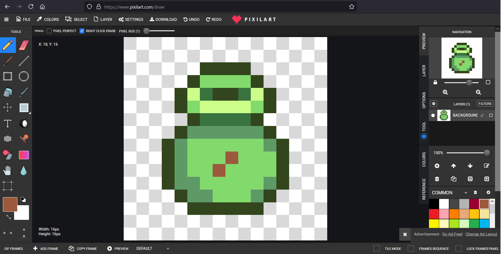
Saving that as seeds.png we can now draw the graphics for the crop. The crop image is actually up to 8 16x32 pixel graphics side by side. Because we defined mountain mint as having four growth phases of two days each we only need 6 graphics:

The first two sprites are always for two different “just planted” seed graphics, and the rest are the growth stages of the plant. The end of each graphic here is represented by the vertical red lines. The horizontal red line represents the point where a graphic will begin to cover up the space above it: this is fine, e.g. for a tall crop like corn, but a shrub like mountain mint doesn’t grow that large. Removing the reference lines, we have the actual texture file:
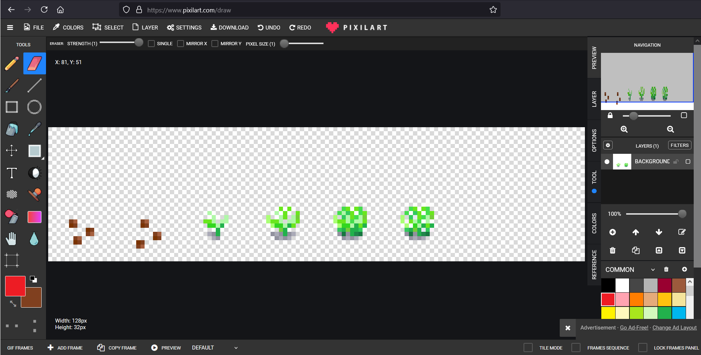
Our crop now exists! But the item it produces (mountain mint flower) does not. Let’s quickly define the object and graphics. Filling out the object.json form we have (again, ommitting localization):
{
"Name": "Mountain Mint", //The name you would like your object to have, this should be identical to the subfolder name.
"Description": "Mountain mint flowers and fragrant leaves", //Description of the product.
"Category": "Flower",
"Edibility": -300,
"Price": 100,
"IsColored": false,
"Recipe": null,
"GiftTastes":
{
"Love": ["Demetrius", "Linus", "Caroline"],
"Like": ["Robin", "Alex"],
"Neutral": null,
"Dislike": ["Abigail", "Haley"],
"Hate": ["Vincent"]
},
// Localization
"NameLocalization":
{
"es": "", //Spanish
"ko": "", //Korean
"de": "", //German
"fr": "", //French
"hu": "", //Hungarian
"it": "", //Italian
"ja": "", //Japanese
"pt": "", //Portuguese
"ru": "", //Russian
"tr": "", //Turkish
"zh": "", //Chinese (Simplified)
},
"DescriptionLocalization":
{
"es": "", //Spanish
"ko": "", //Korean
"de": "", //German
"fr": "", //French
"hu": "", //Hungarian
"it": "", //Italian
"ja": "", //Japanese
"pt": "", //Portuguese
"ru": "", //Russian
"tr": "", //Turkish
"zh": "", //Chinese (Simplified)
},
}And we can draw a 16x16 graphic representing a bunch of small flowers:
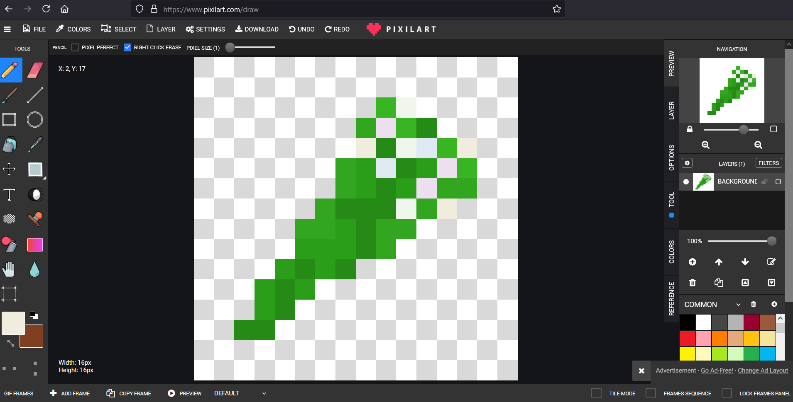
And we’re done! Putting our mod in the /Mods folder of our Stardew installation allows us to add it to the game. SMAPI tells us that the mod is loaded successfully as a content pack. Going to Pierre’s we can buy the seeds:
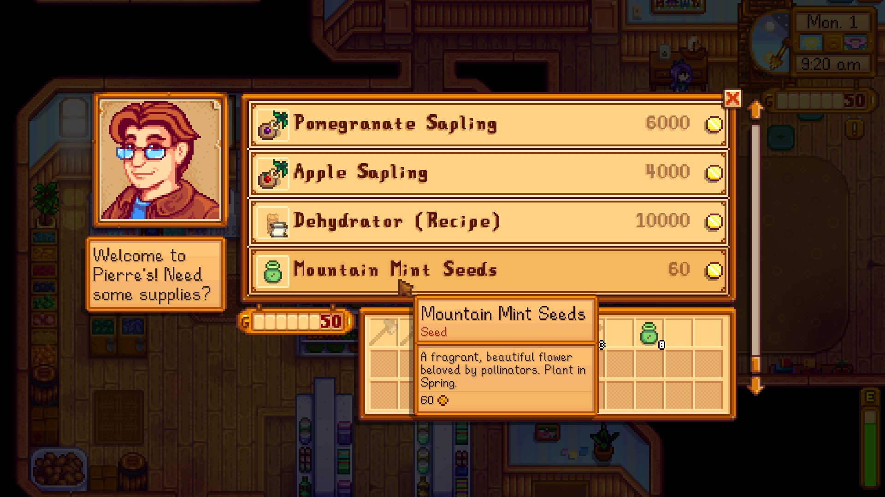
Plant them:
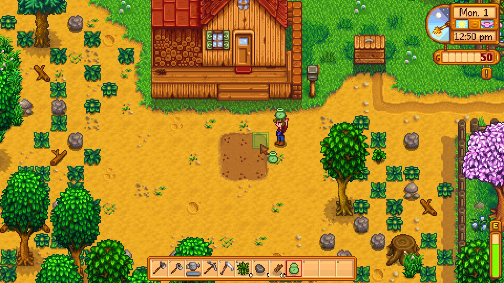
Grow them:
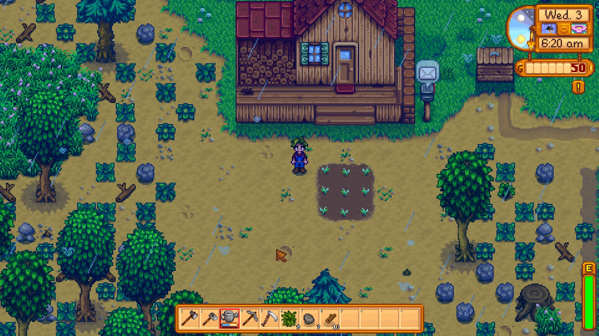
Harvest them:
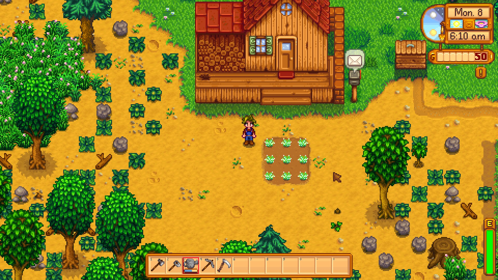
and give them away!
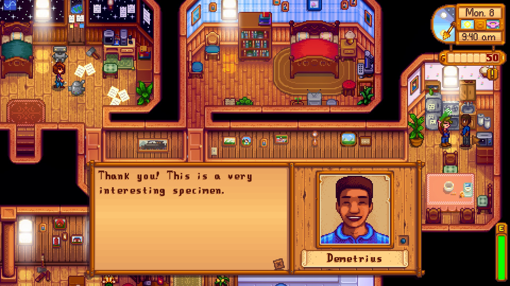
And you can share the mod with anyone who also has JSON Assets installed! Just have them drop the mod folder into their /Mods folder. You can also add many other objects to the game in a similar manner, see the JSON Assets reference.
Nerd stuff
For a more detailed description of what SMAPI does, see the README on the project’s GitHub page
For a more detailed description of JSON Assets, see the reference
Bugfixing Tips
Uh oh. If you’re here something went wrong.
Required mods don’t load properly
Let’s look at a typical ERROR/WARNING/UPDATE RECOMMENDED SMAPI output:
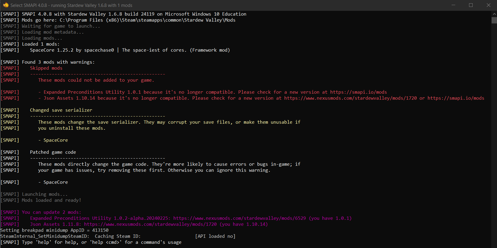
Here SpaceCore was loaded fine, but JSON Assets and Expanded Preconditions Utility were not. In red, SMAPI tells us this is a serious error (they straight-up failed and the game was loaded without them). It also tells us that these versions are not compatible (i.e. out of date) and to go download the newer versions. Helpfully, in purple SMAPI tells us that the latest versions (i.e. the ones we should use) are Expanded Precondition Utility 1.0.2-alpha.20240225 and JSON Assets 1.11.8. Follow the provided links and make sure to download those versions of the mods. The game will then work properly.